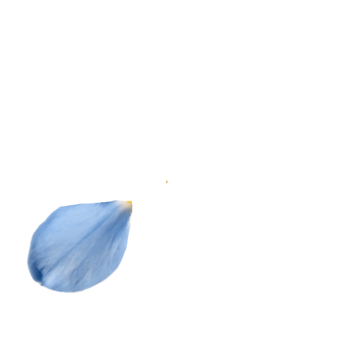
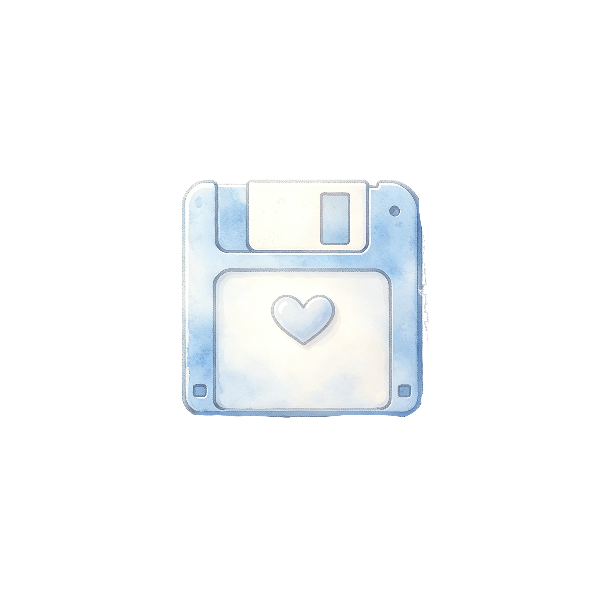
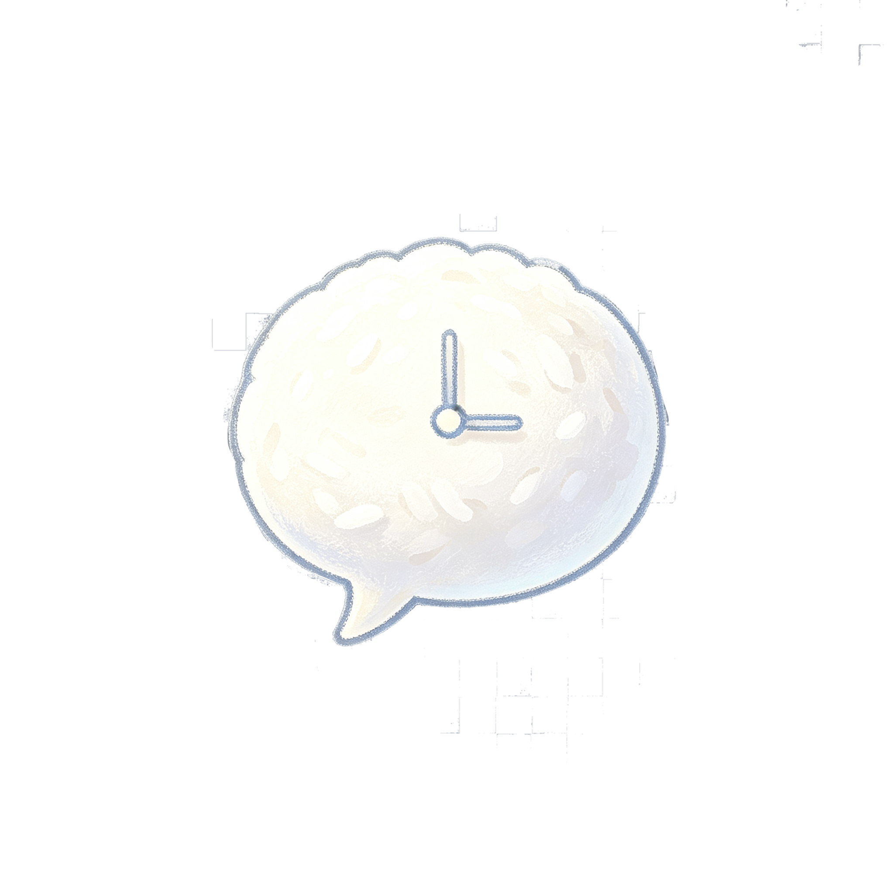
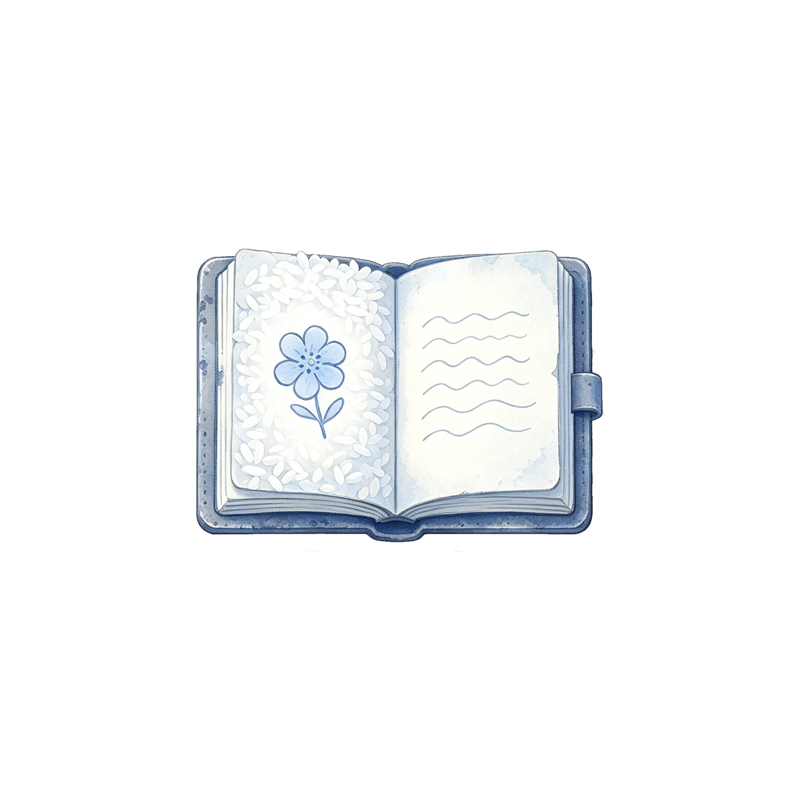

📓
虚实对账本
还没有收集到碎片……
关闭
⚙️
设置
✕
🎵
背景音乐音量
70
🔊
音效音量
80
🔇
静音
💬
文字速度
慢
标准
快
⏭️
自动播放
🏠 返回游戏主菜单
💾
存档
✕
🗑️ 清空所有存档
📂
读档
✕
📜
历史记录
✕
确认
取消

勿忘我
赵奶奶篇 · 探访三~五
开始故事
赵奶奶 · 探访三 · 自我美化的记忆
📓
0
📜
进修通知书
🖼️
蜡笔画
📒
旧实验记录本
放通知书
放记录本
📜 进修通知书
赵秀兰同志：
经研究决定，选派你赴北京植物研究所进修两年。
进修期满后回原单位晋升中级职称。
1989年7月
收起
👵
⏱ 0:08
🖼️
桌上相框
🗄️
床头柜抽屉
👘
墙上围裙
拖拽照片中的小女孩到林姐脸部轮廓
👧
👩
相似度: --
收起
🟤
🟤
🟤
🟤
提交
继续 →



跳过剧情 ⏭
旁白
点击继续 ▾
勿忘我 · 赵奶奶篇 · 完
她问"你记得我吗？"
她不是在问主角——她在问屏幕前的你。
——— ✦ ———
风很轻。种子在你手心里，像几粒深褐色的句号。
回到篇章选择